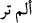

hâlde bazıları mârife geldi? Derim ki: Neffâsat kelimesi mârife olarak geldi, çünkü
düğümlere üfleyen bütün herkes şerlidir. Gasib kelimesi ise nekre geldi, çünkü her
gecede şer olmaz. Bazısında olur, bazısında olmaz. Aynı şekilde her hasetçi de zarar
vermez. Hatta hasedin bazısı da mahmûddur, iyidir. O da hayırlardaki haseddir. Hâsid
kelimesinden Hz. Âdem’in oğlu Kâbil de kasdedilmiş olabilir. Çünkü o kardeşi Hâbil’e
hased etmişti. Hased başkasında bulunan bir hayra üzülmektir.
Fethu’r-Rahmân’da ise şöyle der: Hased nîmeti hak eden kimseden o nîmetin zâil
olmasını temennî etmektir. Nîmetin dînî veya dünyevî olması bir şeyi değiştirmez.
Nitekim şöyle denmiştir: “Mü’min gıpta eder, kâfir ise hased.” [274] Efendimiz (s.a.)
şöyle buyurmuştur: “Ateşin odunu yeyip tükettiği gibi hased de hasenâtı yeyip
tüketir.” [275] Semâdaki ilk günâh, İblîs’in Âdem (a.s.)’a hased etmesidir. Bunun üzerine
Allah Teâlâ onu Cennetten çıkarmış ve kovmuştur. Böylelikle de o şeytân-ı racîm
kovulmuş şeytan olmuştur. Yeryüzündeki ilk günâh ise Kâbîl’in Hâbîl’e hased edip onu
öldürmesidir.
Hüseyin bin Fazl -rahimehullah- demiştir ki: Allah Teâlâ bu sûrede şerleri zikretmiş,
en son da hased ile bitirmiştir ki, onun en kötü tabiat olduğu ortaya çıksın. İbn Abbas
(r.a.) böyle demiştir.
Âlemde hasedden daha kötü bir şey olsaydı,
Bu sûrenin sonunu onunla bitirirdi.
Hasedi ateş olarak kabul et, zîrâ alevlendiğinde,
Lânetlenmiş hasetçiyi o an yakar, kül eder.
Tutalım ki zâhirde tam olarak dindarsın,
Peki, haset içindeyken nasıl Hakk’ı göreceksin?
Bu âyette nefs-i emmârenin kalbe hased edip onun nûrunu söndürmeyi, onu telvîne ve
nîmetin zevâline sebep olan nankörlüğe düşürmeyi murâd etmesine işâret vardır. Hadîs-
i şerîfte geçtiği üzere Nebî (s.a.) Ukbe bin Âmir’e şöyle demiştir: “Bu gece inen ve
misli görülmemiş olan âyetleri görmedin mi? Onlar Felak ve Nâs sûrelerinin
âyetleridir.[276] (Görmedin mi, şeklinde tercüme edilen)  ifâdesi taaccub ifâde eder.
Sonra gelen cümle ise taaccübün sebebini beyân etmektedir. Bu iki sûre dışında
tamâmında istiâze/sığınma bulunan başka sûre yoktur, ki bu iki sûre de Felâk ve Nâs
sûreleridir.
Hadîste bunların Kur’ân’dan olduğuna delil vardır ve bu hadîs İbn Mes‘ud’dan gelen
ve bu iki sûrenin Kur’ân-ı Kerîm’den olmadığını ifâde eden görüşü reddetmektedir.
Aynü’l-meânî’de şöyle geçer: Sahîh olan görüş bu iki sûrenin Kur’ân-ı Kerîm’den
olduğudur. İbn Mes‘ûd’un mushafında bulunmayışı ise bu sûrelerin sürekli insanların
dilinde olduğundan unutulma ihtimâlinin kalmaması sebebiyledir.
Bil ki, Abdullah bin Mes‘ûd (r.a.)’ın mushafından Ümmü’l-Kitâp Fâtiha ve
Muavvizateyn hazfedilmişti. Übey bin Ka‘b (r.a.)’ın mushafında ise kunut duâsı ilâvesi